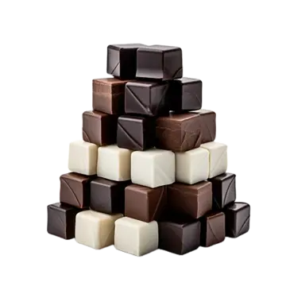

...Çikolata Küpleri...
çikolatalı ve şam fıstıklı tadımlık lezzetler... Yalnızca 4 malzeme ile hazırlanan çikolata küpleri, renkli kağıtlarda veya kürdan batırılarak servis edilir. Özellikle kalabalık sofralarda yer verilen çikolata küpleri, doğum günü gibi özel etkinliklerde de sunulabilir.
Tarif: Rukiye Beyza Sarıkaya

Kaç Kişilik:4kişilik
Hazırlama Süresi:30 dakika
Pişirme Süresi:10 dakika
Çikolata Küpleri İçin Malzemeler...
- 350 gr bitter çikolata
- 150 ml krema
- 1 çorba kaşığı tereyağı
- 150 gr şamfıstık (Badem veya fınfık da olabilir)
Çikolata Küpleri Nasıl Yapılır?
- Bitter çikolatayı benmari usülü eritin.
- Eriyen çikolatanın üzerine krema ve tereyağını ekleyip iyice karıştırıp tencereyi bir tezgaha alın.
- Şamfıstıkları havanda çok az dövüp irili ufaklı parçalara bölün.
- Ufalanan fıstıkları çikolatalı karışıma ekleyip karıştırın.
- Hazırladığınız çikolatayı varsa alüminyum hazır bir kare tepsiye, yoksa kenarlarından taşarak yağlı kağıt yerleştirdiğiniz küçük bir tepsiye dökün.
- Buzdolabında iki saat bekletin.
- Çikolatayı kalıptan çıkartın. Kare parçalara bölün
Afiyet Olsun